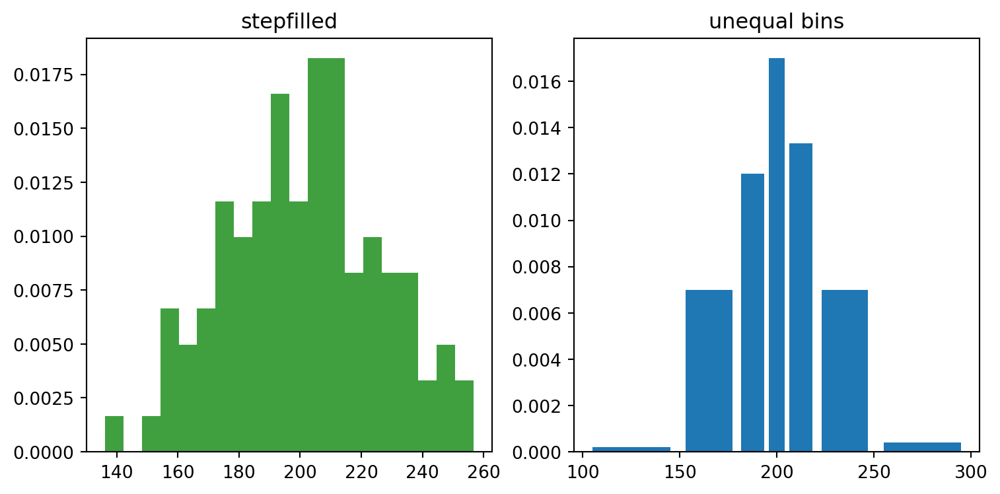
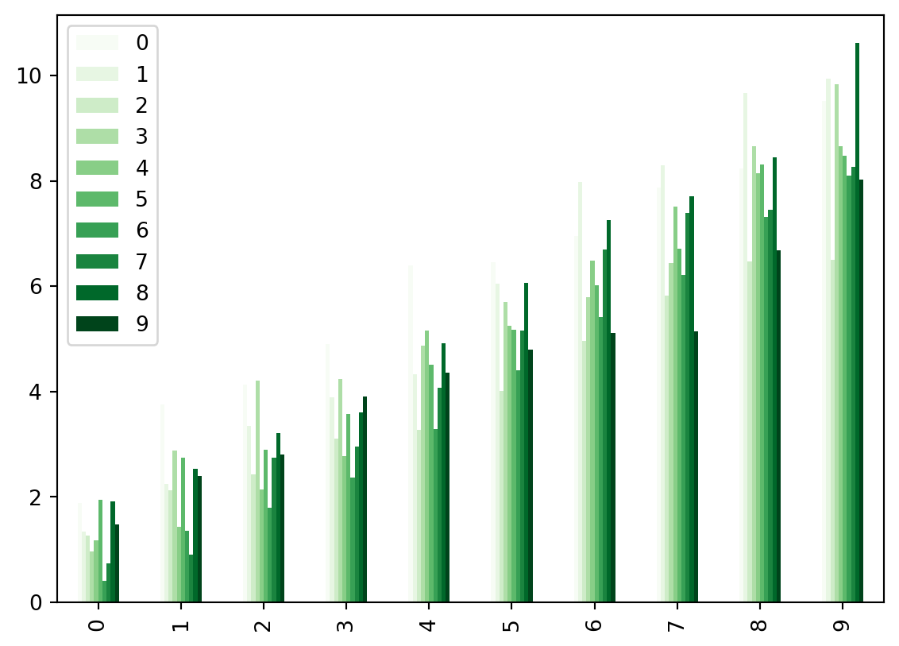
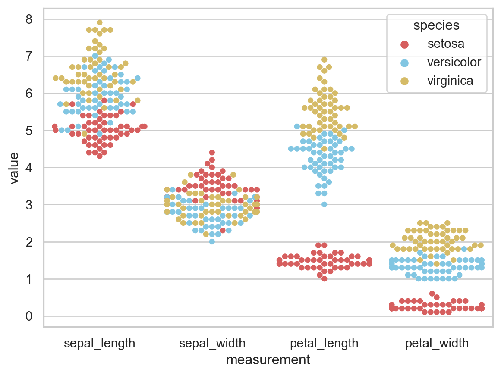

import pandas as pd
import numpy as np
import matplotlib.pyplot as plt
import seaborn as sns
import altair as altpython-in-quarto
以下测试代码来自这里。
Some content …
Data import and basic manipulation
df = pd.read_csv('aiddata.csv')
df.head()| aiddata_id | aiddata_2_id | year | donor | recipient | commitment_amount_usd_constant | coalesced_purpose_code | coalesced_purpose_name | |
|---|---|---|---|---|---|---|---|---|
| 0 | 2414478.0 | NaN | 1977 | Saudi Arabia | India | 348718518.0 | 23030 | Power generation/renewable sources |
| 1 | 2414509.0 | NaN | 1977 | Saudi Arabia | Brazil | 191647004.0 | 23040 | Electrical transmission/ distribution |
| 2 | 2414635.0 | NaN | 1983 | Saudi Arabia | India | 79371799.0 | 21030 | Rail transport |
| 3 | 2414665.0 | NaN | 1984 | Saudi Arabia | Taiwan | 212202942.0 | 21030 | Rail transport |
| 4 | 2414667.0 | NaN | 1984 | Saudi Arabia | Korea | 134511154.0 | 21040 | Water transport |
# don't actually need the first two columns:
df = df.iloc[:, 2:]
# rename the columns
df.columns = ['year', 'donor', 'recipient', 'amount', 'purpose_code', 'purpose_name']
df.head()| year | donor | recipient | amount | purpose_code | purpose_name | |
|---|---|---|---|---|---|---|
| 0 | 1977 | Saudi Arabia | India | 348718518.0 | 23030 | Power generation/renewable sources |
| 1 | 1977 | Saudi Arabia | Brazil | 191647004.0 | 23040 | Electrical transmission/ distribution |
| 2 | 1983 | Saudi Arabia | India | 79371799.0 | 21030 | Rail transport |
| 3 | 1984 | Saudi Arabia | Taiwan | 212202942.0 | 21030 | Rail transport |
| 4 | 1984 | Saudi Arabia | Korea | 134511154.0 | 21040 | Water transport |
# check the shape
df.shape
# close to 10K rows!(98540, 6)# check year range
min(df.year), max(df.year)(1973, 2013)Task 1
Some content …
# We first get the donation data
donation_data = []
for group in df.groupby(['year', 'donor']):
# total amount of donation in that year for this country
total_yearly_donation = sum(group[1].amount)
# year, country name, total
donation_data.append(
(group[0][0], group[0][1], total_yearly_donation))
donation_df = pd.DataFrame(
donation_data, columns=['year','country','donation'])
donation_df.head()| year | country | donation | |
|---|---|---|---|
| 0 | 1973 | Australia | 46285863.0 |
| 1 | 1973 | Belgium | 39251336.0 |
| 2 | 1973 | Canada | 437928427.0 |
| 3 | 1973 | France | 247189555.0 |
| 4 | 1973 | Germany | 562232384.0 |
# Then we get the receiving data
receiving_data = []
for group in df.groupby(['year', 'recipient']):
# total amount of receiving in that year for this country
total_yearly_receiving = sum(group[1].amount)
# year, country name, total
receiving_data.append(
(group[0][0], group[0][1], total_yearly_receiving))
receiving_df = pd.DataFrame(
receiving_data, columns=['year','country','receiving'])
receiving_df.head()| year | country | receiving | |
|---|---|---|---|
| 0 | 1973 | Brazil | 3.120750e+08 |
| 1 | 1973 | Chile | 8.805608e+07 |
| 2 | 1973 | Colombia | 5.499448e+08 |
| 3 | 1973 | Cyprus | 9.613414e+06 |
| 4 | 1973 | India | 2.285257e+09 |
all_cntry = list(df.donor) + list(df.recipient)
all_cntry = list(set(all_cntry))
# there are in total 47 unique countries
len(all_cntry)47# We have so many countries. It's difficult to visualize them all in one plot
# So I am assigning groups to countries.
# Basically, I want to plot 4 countires in each figure
cntry_group_list = list(np.arange(1,13)) * 4
del cntry_group_list[-1]receiving_df[receiving_df.year == 1973]| year | country | receiving | |
|---|---|---|---|
| 0 | 1973 | Brazil | 3.120750e+08 |
| 1 | 1973 | Chile | 8.805608e+07 |
| 2 | 1973 | Colombia | 5.499448e+08 |
| 3 | 1973 | Cyprus | 9.613414e+06 |
| 4 | 1973 | India | 2.285257e+09 |
| 5 | 1973 | Korea | 1.363707e+09 |
| 6 | 1973 | Kuwait | 3.254830e+05 |
| 7 | 1973 | Saudi Arabia | 6.509700e+04 |
| 8 | 1973 | Thailand | 2.063634e+08 |
| 9 | 1973 | United Arab Emirates | 6.509700e+04 |
# same issue for donation data
donation_df[donation_df.year == 1973]| year | country | donation | |
|---|---|---|---|
| 0 | 1973 | Australia | 4.628586e+07 |
| 1 | 1973 | Belgium | 3.925134e+07 |
| 2 | 1973 | Canada | 4.379284e+08 |
| 3 | 1973 | France | 2.471896e+08 |
| 4 | 1973 | Germany | 5.622324e+08 |
| 5 | 1973 | Italy | 1.667191e+08 |
| 6 | 1973 | Japan | 9.389659e+08 |
| 7 | 1973 | Netherlands | 1.627509e+08 |
| 8 | 1973 | Norway | 3.587485e+07 |
| 9 | 1973 | Sweden | 1.683693e+08 |
| 10 | 1973 | Switzerland | 1.406094e+07 |
| 11 | 1973 | United Kingdom | 4.425792e+08 |
| 12 | 1973 | United States | 1.553264e+09 |
donation_dfs = []
for group in donation_df.groupby('year'):
year = group[0]
present_cntry = group[1].country.tolist()
absent_cntry = [x for x in all_cntry if x not in present_cntry]
absent_df = pd.DataFrame({
'year': year,
'country': absent_cntry,
'donation': 0
})
dff = pd.concat([group[1], absent_df], ignore_index = True)
dff.sort_values(by='country', ascending=True, inplace=True)
dff['group'] = cntry_group_list
donation_dfs.append(dff)
donation = pd.concat(donation_dfs, ignore_index = True)
donation.head()| year | country | donation | group | |
|---|---|---|---|---|
| 0 | 1973 | Australia | 46285863.0 | 1 |
| 1 | 1973 | Austria | 0.0 | 2 |
| 2 | 1973 | Belgium | 39251336.0 | 3 |
| 3 | 1973 | Brazil | 0.0 | 4 |
| 4 | 1973 | Canada | 437928427.0 | 5 |
receiving_dfs = []
for group in receiving_df.groupby('year'):
year = group[0]
present_cntry = group[1].country.tolist()
absent_cntry = [x for x in all_cntry if x not in present_cntry]
absent_df = pd.DataFrame({
'year': year,
'country': absent_cntry,
'receiving': 0
})
dff = pd.concat([group[1], absent_df], ignore_index = True)
dff.sort_values(by='country', ascending=True, inplace=True)
dff['group'] = cntry_group_list
receiving_dfs.append(dff)
receiving = pd.concat(receiving_dfs, ignore_index = True)
receiving.head()| year | country | receiving | group | |
|---|---|---|---|---|
| 0 | 1973 | Australia | 0.0 | 1 |
| 1 | 1973 | Austria | 0.0 | 2 |
| 2 | 1973 | Belgium | 0.0 | 3 |
| 3 | 1973 | Brazil | 312075045.0 | 4 |
| 4 | 1973 | Canada | 0.0 | 5 |
# to check whether the countries in the two lists are the same
r_c = list(set(receiving.country))
d_c = list(set(donation.country))
r_c == d_cTrueall_df = donation
all_df['receiving'] = receiving['receiving']
all_df['d_minus_r'] = all_df['donation'] - all_df['receiving']
all_df.head()| year | country | donation | group | receiving | d_minus_r | |
|---|---|---|---|---|---|---|
| 0 | 1973 | Australia | 46285863.0 | 1 | 0.0 | 46285863.0 |
| 1 | 1973 | Austria | 0.0 | 2 | 0.0 | 0.0 |
| 2 | 1973 | Belgium | 39251336.0 | 3 | 0.0 | 39251336.0 |
| 3 | 1973 | Brazil | 0.0 | 4 | 312075045.0 | -312075045.0 |
| 4 | 1973 | Canada | 437928427.0 | 5 | 0.0 | 437928427.0 |
all_df['year'] = pd.to_datetime(all_df['year'], format='%Y')
# We only plot group 1, for simplicity
group1 = all_df[all_df.group == 1]plt.figure()
alt.Chart(group1).mark_line().encode(
x='year:T',
y = alt.Y(
'd_minus_r:Q',
title = 'Donation minus receiving'
),
color='country:N',
strokeDash='country:N'
)
plt.show()<Figure size 672x480 with 0 Axes>
Altair plot render
Quarto 貌似渲染不出 altair 画的图。日后琢磨。
Using Python Visualization Libraries in RStudio
Matplotlib
import numpy as np
import matplotlib.pyplot as plt
np.random.seed(0)
mu = 200
sigma = 25
x = np.random.normal(mu, sigma, size=100)
fig, (ax0, ax1) = plt.subplots(ncols=2, figsize=(8, 4))
ax0.hist(x, 20, density=1, histtype='stepfilled', facecolor='g', alpha=0.75)
ax0.set_title('stepfilled')
# Create a histogram by providing the bin edges (unequally spaced).
bins = [100, 150, 180, 195, 205, 220, 250, 300]
ax1.hist(x, bins, density=1, histtype='bar', rwidth=0.8)
ax1.set_title('unequal bins')
fig.tight_layout()
plt.show()
Pandas
import numpy as np
import pandas as pd
import matplotlib.pyplot as plt
dd = pd.DataFrame(np.random.randn(10, 10)).applymap(abs)
dd = dd.cumsum()
plt.figure()
dd.plot.bar(colormap='Greens')
plt.show()<Figure size 672x480 with 0 Axes>
Seaborn
import pandas as pd
import seaborn as sns
import matplotlib.pyplot as plt
sns.set(style="whitegrid", palette="muted")
# Load the example iris dataset
iris = sns.load_dataset("iris")
# "Melt" the dataset to "long-form" or "tidy" representation
iris = pd.melt(iris, "species", var_name="measurement")
plt.figure()
# Draw a categorical scatterplot to show each observation
sns.swarmplot(x="measurement", y="value", hue="species", palette=["r", "c", "y"], data=iris)
plt.show()